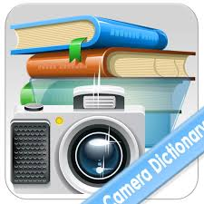

PhotoDictionary
Version 0.0.1
Application by PhotoDictionary
Send
feedback
How to use this app:
- Press and hold the center button until camera focuses to your text. This may take < 2 secs
depending upon your device configuration.
- For low light case, goto the Settings and check the "Light" option and then follow step 1.
- App will capture the words in the window, identify the word you want to know the meaning of,
and gives back the wiktionary meaning, if at all available.